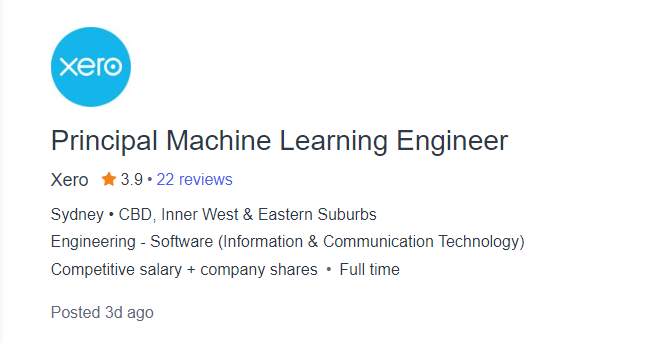
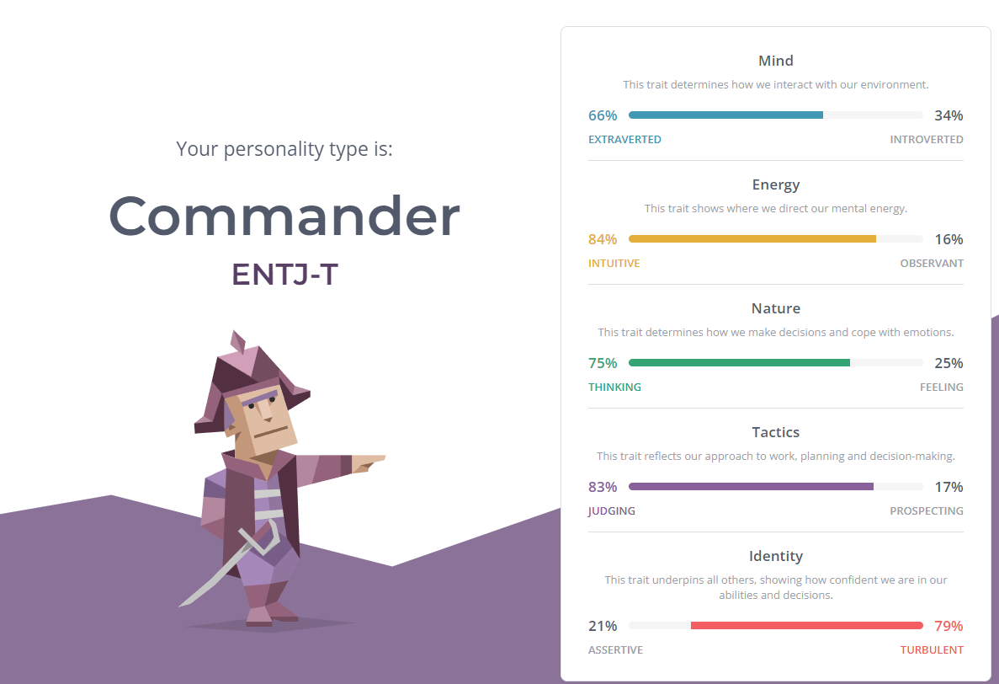
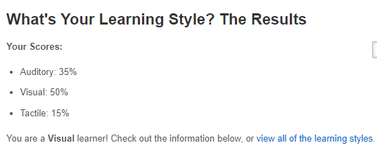
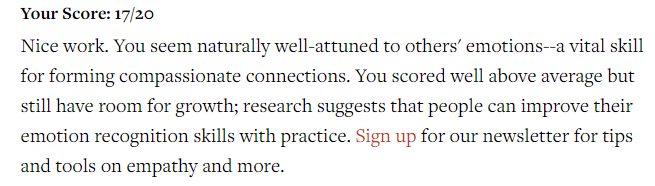

Interest in IT
My Main interest in IT is the feild of Machine learning. I have always wanted to work in this feild and I have taken every elective that brings me closer to this goal. I am fascinated with how manipulating numbers allows us to do some pretty incredible things
If you were to ask me when this started, I would probably point to my dad. He and I used to spend hours when I was younger messing around with computers. We started off doing things like taking our old pentium 4 machine apart and putting it back together, and then moved on to fixing up old computers in the neighbourhood. Soon we moved on from tinkering with hardware to tinkering with software and this is where I found my home. I owe everything I've made of myself to my dad. He is to this day, my biggest inspiration.
I came to RMIT because I had heard about the incredibly high stature the university held. I was also floored by the things some of the students at RMIT had accomplished and I wanted to prove to myself that I could live upto that
I am of the opinion that education extends far beyond learning to code. I hope that my time at university makes me into a much more well rounded person who can make a genuine contribution to soceity. I also want to me able to whistle by the time I graduate. On this front unfortuantely I have made absolutely no progress. It seems that whistling is much more complicated than it seems
Ideal Job
My ideal job would be to work as the machine learning engineer for a large company. A larger company would mean more resources and more data to play around with, which makes my job much more interesting. Working as a machine learning engineer would also allow me to push a company so far ahead of its competition, satisfying my overly competitive nature, which is a nice bonus.
Most jobs like this, require you to have a very indepth understanding of machine learning models. It is important that you are able to apply and tweak said models to fit the requirement as best you can. It goes without saying being comfortable in python is essential, along with being able to work with frameworks like tensorflow. They are also looking for someone with a good amount of experience doing similar things for other companies.
Personally I have worked with machine learning models a few times and I am very comfortable with python and to a certain extent, frameworks like tensorflow and pytorch. I have little to no experience actually implementing these models in the real world, however, and so have no idea about the kinds of requirements a large company would have. I also have no experience actually working in the industry, but I hope to gain some soon after I gradute. I still have alot to learn in the world of machine learning but I believe I am on the right track and steadily making progress!
Personality Tests
16Personalities
Learning Style
Emotional Intelligence
What it means for me?
I was surprised by the 16Personalities test, as I have never seen myself as a leader. I would agree that I am an extrovert and I definitely value thinking over feeling. I wasn't surprised by the fact that I am a visual learner, however, as I identified this a long time ago. I was also suprised to have higher than average emotional intelligence.
I feel it is important to take these personalities into consideration, as having too many commanders, for example wouldn't result in a good team environment. Having a good balance of thinkers and feelers is also a very good idea as keeping the teams motivation up is as important as keeping it efficient